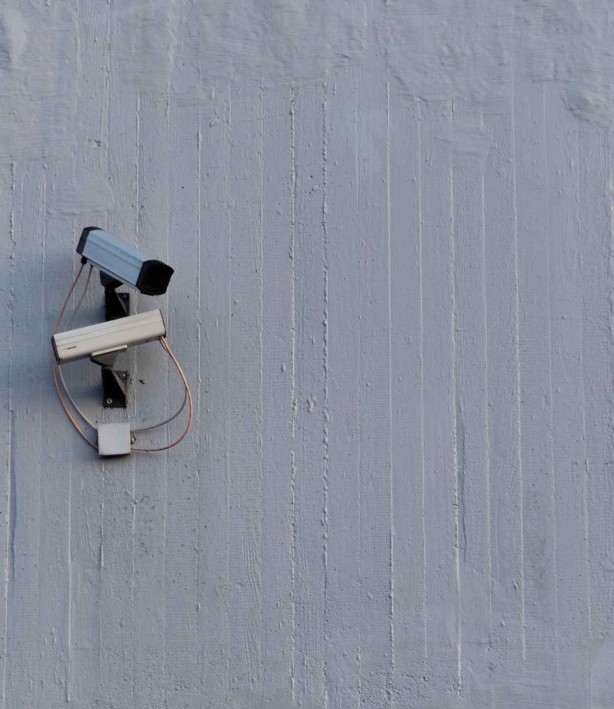
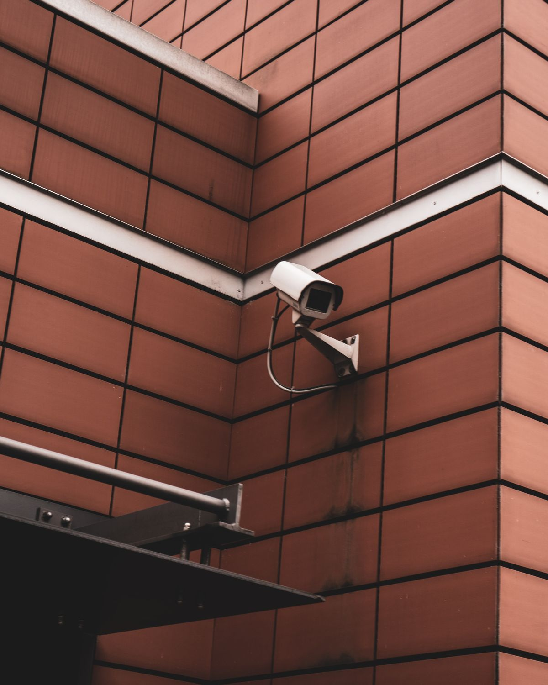

PANDUAN PEMASANGAN
Mengapa Memilih Jasa Pasang CCTV dari Kami
Sebagai penyedia jasa pasang CCTV yang berpengalaman, kami memiliki misi utama untuk memberikan solusi keamanan terbaik bagi pelanggan.
Selengkapnya
PANDUAN PEMASANGAN
Sebagai penyedia jasa pasang CCTV yang berpengalaman, kami memiliki misi utama untuk memberikan solusi keamanan terbaik bagi pelanggan.
SelengkapnyaKEAMANAN & INFORMASI
Rekaman CCTV dapat membantu memberi konteks terhadap suatu peristiwa. Simak hal-hal yang perlu diperhatikan terkait keaslian dan penggunaan rekaman.
Selengkapnya
TIPS CCTV
Penempatan titik kamera yang tepat membantu meningkatkan efektivitas pengawasan dan mengurangi blind spot.
SelengkapnyaTidak ada artikel yang cocok dengan pencarian Anda.